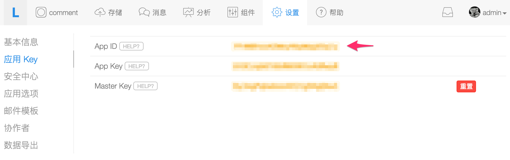
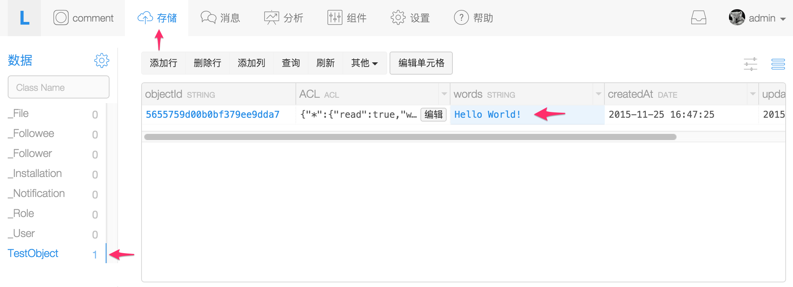

public class MyLeanCloudApp extends Application {
@Override
public void onCreate() {
super.onCreate();
// 初始化参数依次为 this, AppId, AppKey
AVOSCloud.initialize(this,"{{appid}}","{{appkey}}");
// 启用北美节点
AVOSCloud.useAVCloudUS();
}
}
全球节点
中国大陆节点 leancloud.cn（SDK 初始化方法默认使用该节点）
北美节点 us.leancloud.cn（服务北美市场）
香港节点，服务东南亚市场（未上线，准备中）
各个节点彼此独立，开发者账号无法跨节点来创建应用或调用 API。
验证
首先，确认本地网络环境是可以访问 LeanCloud 服务器的，可以执行以下命令行：
ping api.leancloud.cn
如果当前网路正常将会得到如下响应：
PING api.leancloud.cn (120.132.49.239): 56 data bytes
64 bytes from 120.132.49.239: icmp_seq=3 ttl=49 time=65.165 ms
64 bytes from 120.132.49.239: icmp_seq=4 ttl=49 time=53.273 ms
64 bytes from 120.132.49.239: icmp_seq=5 ttl=49 time=51.519 ms
64 bytes from 120.132.49.239: icmp_seq=6 ttl=49 time=68.442 ms
Android SDK 安装指南
获取 SDK
获取 SDK 有多种方式，较为推荐的方式是通过包依赖管理工具下载最新版本。
包依赖管理工具安装
Gradle
Gradle 是 Google 官方推荐的构建 Android 程序的工具，使用 Android Studio 进行开发的时候，它会自动在新建的项目中包含一个自带的命令行工具 gradlew。我们推荐开发者使用这个自带的命令行工具，这是因为 Gradle 存在版本兼容的问题，很多开发者即使正确配置了 Gradle 脚本，但由于使用了最新版本或不兼容的 Gradle 版本而仍然无法成功加载依赖包。
Android Studio
使用 Android Studio 创建一个新的项目的时候，它的目录结构如下：
首先打开根目录下的
build.gradle进行如下标准配置：然后打开
app目录下的build.gradle进行如下配置：我们已经提供了官方的 maven 仓库，推荐大家使用。
Eclipse
Eclipse 用户首先 下载 SDK，然后按照 手动安装步骤 将 SDK 导入到项目里。
手动安装
下载 SDK
下载文件成功解压缩后会得到如下文件：
根据上述包及其对应的功能模块，开发者可以根据需求自行导入对应的模块。
LeanCloud 基本存储模块
avoscloud-<版本号>.jarokhttp-2.6.0-leancloud.jarokio-1.6.0-leancloud.jarfastjson.jar(请一定要使用我们提供的 jar，针对原版有 bug 修正。)httpmime-4.2.4.jarLeanCloud 推送模块和实时聊天模块
avospush-<版本号>.jarJava-WebSocket-1.3.1-leancloud.jarprotobuf-java-2.6.1.jarLeanCloud 统计模块
avosstatistics-<版本号>.jarLeanCloud SNS 模块
weibo.sdk.android.sso.jarqq.sdk.1.6.1.jar我们提供的下载包里包含了必须的依赖库，请务必使用我们提供的 jar 包，才能保证 SDK 的正常运行。特别是 fastjson 必须使用我们提供的版本，否则无法运行。
注意：如果需要使用美国站点，并且 SDK 版本是 3.3 及以上，则不需要引入 SSL 证书。其他低版本的用户，需要下载 SSL 证书，将其拷贝到项目的
res/raw/之下。Android Studio
首先本地已经下载好了项目需要的 SDK 包，然后按照以下步骤导入：
Eclipse 的导入与一般的 jar 导入无本质区别，因此不再赘述。
初始化
首先来获取 App ID 以及 App Key。
打开 控制台 / 设置 / 应用 Key，如下图：

然后新建一个 Java Class ，名字叫做 MyLeanCloudApp,让它继承自 Application 类，实例代码如下:
将上述代码中的 App ID 以及 App Key 替换成从控制台复制粘贴的对应的数据即可。
然后打开
AndroidManifest.xml文件来配置 SDK 所需要的手机的访问权限以及声明刚才我们创建的MyLeanCloudApp类：启用指定节点
SDK 的初始化方法默认使用中国大陆节点，如需切换到 其他可用节点，请参考如下用法：
全球节点
香港节点，服务东南亚市场（未上线，准备中）验证
首先，确认本地网络环境是可以访问 LeanCloud 服务器的，可以执行以下命令行：
如果当前网路正常将会得到如下响应：
然后在项目中编写如下测试代码：
在
MainActivity.java中的onCreate方法添加如下代码：然后，点击
Run运行调试，真机和虚拟机均可。然后打开 控制台 > 存储 > 数据 > TestObject，如果看到如下内容，说明 SDK 已经正确地执行了上述代码，安装完毕。

如果控制台没有发现对应的数据，请参考 问题排查。
问题排查
401 Unauthorized
如果 SDK 抛出 401 异常或者查看本地网络访问日志存在：
则可认定为 App ID 或者 App Key 输入有误，或者是不匹配，很多开发者同时注册了多个应用，导致拷贝粘贴的时候，用 A 应用的 App ID 匹配 B 应用的 App Key，这样就会出现服务端鉴权失败的错误。
客户端无法访问网络
客户端尤其是手机端，应用在访问网络的时候需要申请一定的权限。